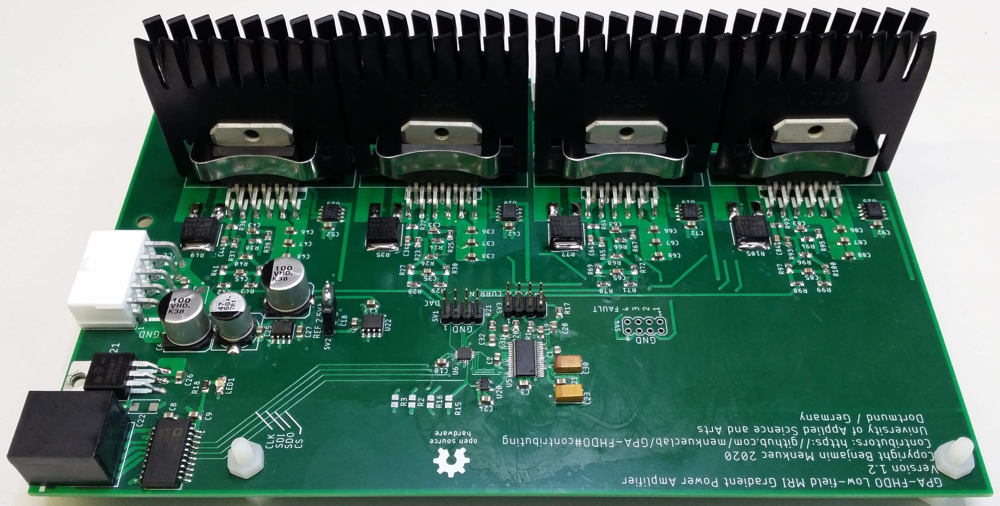

Welcome to GPA-FHDO’s documentation!¶
This Gradient Power Amplifier (GPA) has 4 channels, of which each can drive a current of +- 10 A. The current is controlled via an SPI interface. The GPA has a build in current sensor for each channel that is also controlled via SPI. The information from the current sensor can be used for automatic calibration of the GPA.
Warning
Disclaimer: Not intended for medical use!
Contents:¶
Contributing¶
Jason Stockmann
Nicolas Arango
Odin Holmes